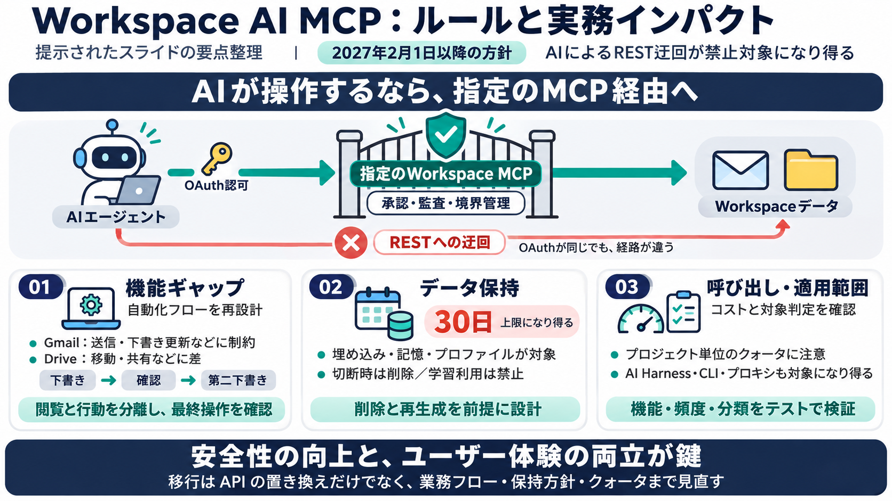

Google Workspace MCP サーバーを構成する | Google for Developers
Google Workspace には、AI エージェントが Google Workspace データと安全にやり取りできるようにするリモートの Model Context Protocol（MCP）サーバーが用意されています。Google…

| ステップ | REST前提（イメージ） | MCP制約（要点） |
|---|---|---|
| i 下書き生成 | 下書き作成→ユーザー確認 | 下書き作成は可能（範囲内で） |
| ii AIが修正 | 既存下書きを更新して反映 | 作成後の更新が制限される |
| iii 送信 | 更新後の下書きを送信 | 別下書き（第二下書き）等が必要 |
Google Workspace には、AI エージェントが Google Workspace データと安全にやり取りできるようにするリモートの Model Context Protocol（MCP）サーバーが用意されています。Google…
Google Workspace offers remote Model Context Protocol (MCP) servers that allow AI agents to securely interact with Googl…
Google Workspace offers remote Model Context Protocol (MCP) servers that allow AI agents to securely interact with Googl…
Google Workspace offers remote Model Context Protocol (MCP) servers that allow AI agents to securely interact with Googl…
Google Workspace 用の Universal Search MCP サーバーは、Model Context Protocol（MCP）標準を使用して、AI エージェントが Workspace アーティファクトを検索できるように…